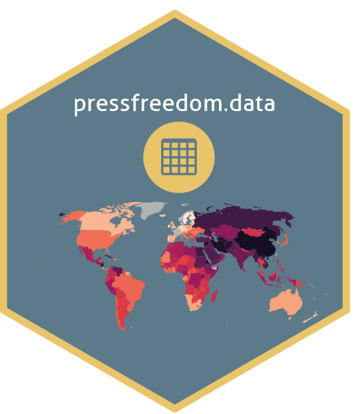

Standardized Reporters Without Borders Press Freedom Index (2002-2026)
Source:R/data.R
rwb_standardized.RdA comprehensive dataset of press freedom indicators from Reporters Without Borders (RSF: Reporters Sans Frontieres, the organization's French name and legal identity; RWB: Reporters Without Borders, its common English name – used for the `rwb_` prefix throughout this package), standardized and cleaned by the pressfreedom.data package pipeline.
Format
A data frame with 4,183 rows and 51 columns:
**Core RSF press freedom (columns 1-20):** year_n, iso, country_en, score, rank, political_context, rank_pol, economic_context, rank_eco, legal_context, rank_leg, social_context, rank_soc, safety, rank_saf, zone, rank_n_1, rank_evolution, score_n_1, score_evolution
**EU membership (column 21):** EU
**OECD membership (column 22):** OECD
**UN M49 regional classifications (columns 23-29):** un_region, un_subregion, un_intermediate_region, LLDC, SIDS, LDC, UN
**World Bank static classifications (columns 30-41):** wb_region, wb_region2, wb_region2_code, wb_lending_category, arab_world, central_europe_baltics, small_states, IDA_only, IDA_blend, IBRD_only, IDA_total, IDA_IBRD_total
**World Bank time-varying classifications (columns 42-46):** wb_income_group, middle_income, low_middle_income, euro_area, fragile_state
**UN development & debt relief (column 47):** HIPC
**Socioeconomic data (columns 48-51):** population_mn, gdp_usd_mn, area_km2, gdp_pc_usd
- year_n
Numeric year (2002-2026, excluding 2011)
- iso
ISO 3166-1 alpha-3 country code
- country_en
Standardized country name in English
- score
Press freedom score (0-100); higher = more free
- rank
Rank within year (1 = most free)
- political_context
Political context sub-index (2022-2026 only)
- rank_pol
Political context rank (2022-2026 only)
- economic_context
Economic context sub-index (2022-2026 only)
- rank_eco
Economic context rank (2022-2026 only)
- legal_context
Legal context sub-index (2022-2026 only)
- rank_leg
Legal context rank (2022-2026 only)
- social_context
Social context sub-index (2022-2026 only)
- rank_soc
Social context rank (2022-2026 only)
- safety
Safety sub-index (2022-2026 only)
- rank_saf
Safety rank (2022-2026 only)
- zone
RSF geographic zone (English)
- rank_n_1
Previous year's rank
- rank_evolution
Rank change from previous year
- score_n_1
Previous year's score
- score_evolution
Score change from previous year
- EU
Logical; EU member in that year
- OECD
Logical; OECD member (time-varying)
- un_region
UN M49 region (5 regions: Africa, Americas, Asia, Europe, Oceania)
- un_subregion
UN M49 sub-region; ~17 subregions
- un_intermediate_region
UN M49 intermediate region; zero NAs (replaced with sub-region where missing)
- LLDC
Logical; landlocked developing country (static geopolitical classification)
- SIDS
Logical; small island developing state (static geopolitical classification)
- LDC
Logical; least developed country (time-varying); based on UN CDP triennial reviews (2000-2024) with nearest-prior interpolation
- UN
Logical; UN member (time-varying); FALSE for PSE (observer), TWN, XXK; MNE TRUE from 2006; SSD TRUE from 2012; all others TRUE
- wb_region
World Bank region (7 regions; July 2026 classification snapshot)
- wb_region2
World Bank region with Sub-Saharan Africa split into AFE/AFW (8 groups; July 2026 snapshot)
- wb_region2_code
World Bank region code (e.g., AFE, AFW, EAS, LCN; July 2026 snapshot)
- wb_lending_category
World Bank lending category (IBRD, IDA, Blend, or NA; July 2026 snapshot)
- arab_world
Logical; Arab World group member (22 countries; July 2026 snapshot)
- central_europe_baltics
Logical; Central Europe & Baltics member (11 countries; July 2026 snapshot)
- small_states
Logical; World Bank small states group (July 2026 snapshot)
- IDA_only
Logical; IDA-only borrower (derived from wb_lending_category)
- IDA_blend
Logical; Blend (IDA + IBRD) borrower (derived from wb_lending_category)
- IBRD_only
Logical; IBRD-only borrower (derived from wb_lending_category)
- IDA_total
Logical; IDA borrower (IDA only or Blend; derived from wb_lending_category)
- IDA_IBRD_total
Logical; IBRD borrower (IBRD or Blend; derived from wb_lending_category)
- wb_income_group
World Bank income classification (time-varying; FY2002-FY2026); one of "High income", "Upper middle income", "Lower middle income", "Low income"
- middle_income
Logical; Upper or Lower middle income (derived from wb_income_group)
- low_middle_income
Logical; not High income (derived from wb_income_group)
- euro_area
Logical; eurozone member (time-varying); 12 founding members from 2002; 8 countries joined 2007-2023
- fragile_state
Logical; World Bank Fragile and Conflict-Affected Situations (time-varying; NA for 2002-2005; FY2006-FY2026 classified); methodology changed 4 times: LICUS (FY2006-2009), Fragile States List (FY2009-2010), Harmonized List (FY2011-2020), FCS List (FY2020-2026)
- HIPC
Logical; HIPC Initiative completion point reached (time-varying); 34 countries total; TRUE from completion year onward
- population_mn
Total mid-year population in millions (WB SP.POP.TOTL); annual 2002-2024; 2025-2026 forward-filled from 2024; NA for YUG, SCG, CXX, XXK, XXX, TWN
- area_km2
Surface area in km^2 (UNSD SYB68, reference year 2023); static; NA for historical entities and non-UN territories
- gdp_usd_mn
GDP in current USD, in millions (WB NY.GDP.MKTP.CD); annual 2002-2023; 2024-2026 forward-filled from 2023; coverage thins in recent years; NA for historical entities and some countries with unreported recent data
- gdp_pc_usd
GDP per capita in current USD (derived as gdp_usd_mn / population_mn); NA wherever either component is NA
Details
## Data Cleaning Pipeline
This dataset is the output of a comprehensive 4-phase data pipeline implemented in the pressfreedom.data package:
- **Phase A (Download):** Raw CSV files from RSF website - **Phase B (Normalize):** Column names and data types standardized across periods - **Phase C (Combine):** All periods merged into unified structure - **Phase D (Standardize):** Country names consolidated, ISO codes assigned, duplicates resolved
## Important Notes
**Audit Trail:** The full audit trail (including `country_name_original` and `consolidation_flag` columns) is preserved in the source RDS file (`data/processed/rwb_standardized.rds`) within the pressfreedom.data package. The exported dataset in `data/rwb_standardized.rda` contains 51 columns: 20 core RSF press freedom indicators, plus EU membership and 30 UN/World Bank classifications.
**Score Comparability:** Scores are only comparable within their respective periods: - **Period 1 (2002-2012):** Non-comparable scores; use ranks for trends - **Period 2 (2013-2021):** Comparable scores (0-100 scale) - **Period 3 (2022-2026):** New methodology; different dimensions tracked
**Missing Data:** Sub-indices (political, economic, legal, social, safety contexts) are only available in Period 3 (2022-2026). Periods 1-2 have NA values for these columns.
**Cyprus:** Tracked as two separate entities: - "Cyprus" (ISO: CYP) - Republic of Cyprus - "Northern Cyprus" (ISO: CXX) - Turkish Republic of Northern Cyprus
Examples
# Load the dataset
data(rwb_standardized)
# Basic summary
head(rwb_standardized)
#> # A tibble: 6 × 51
#> year_n iso score rank political_context rank_pol economic_context rank_eco
#> <dbl> <chr> <dbl> <dbl> <dbl> <dbl> <dbl> <dbl>
#> 1 2002 AFG 35.5 104 NA NA NA NA
#> 2 2002 DZA 31 95 NA NA NA NA
#> 3 2002 AGO 30.2 93 NA NA NA NA
#> 4 2002 ARG 12 42 NA NA NA NA
#> 5 2002 AUS 3.5 12 NA NA NA NA
#> 6 2002 AUT 7.5 27 NA NA NA NA
#> # ℹ 43 more variables: legal_context <dbl>, rank_leg <dbl>,
#> # social_context <dbl>, rank_soc <dbl>, safety <dbl>, rank_saf <dbl>,
#> # zone <chr>, rank_n_1 <dbl>, rank_evolution <dbl>, score_n_1 <dbl>,
#> # score_evolution <dbl>, country_en <chr>, EU <lgl>, OECD <lgl>,
#> # un_region <chr>, un_subregion <chr>, un_intermediate_region <chr>,
#> # LLDC <lgl>, SIDS <lgl>, LDC <lgl>, wb_region <chr>, wb_region2 <chr>,
#> # wb_region2_code <chr>, wb_lending_category <chr>, arab_world <lgl>, …
# Countries included
length(unique(rwb_standardized$country_en))
#> [1] 184
# Years covered
range(rwb_standardized$year_n)
#> [1] 2002 2026